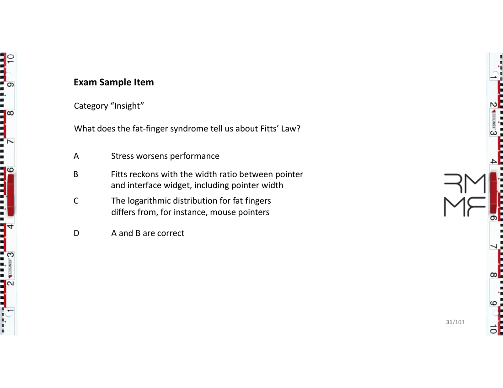
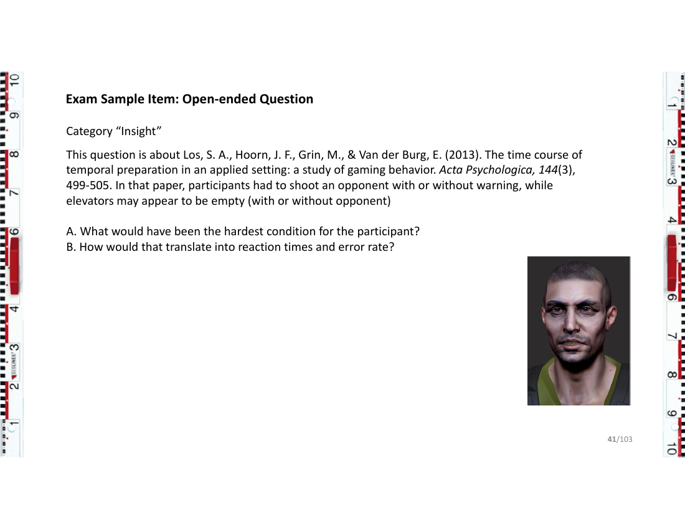
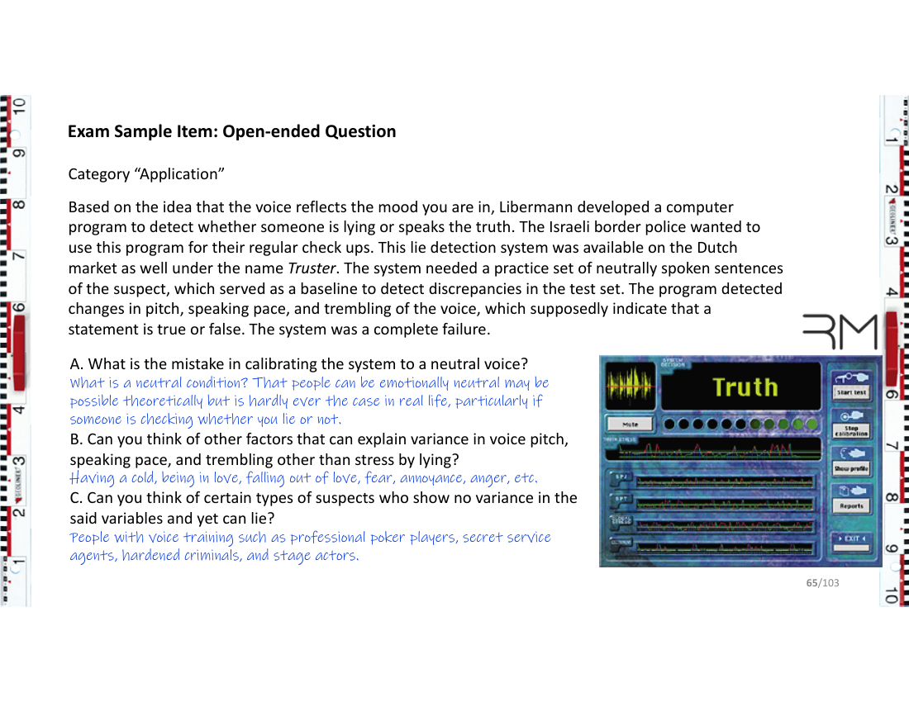
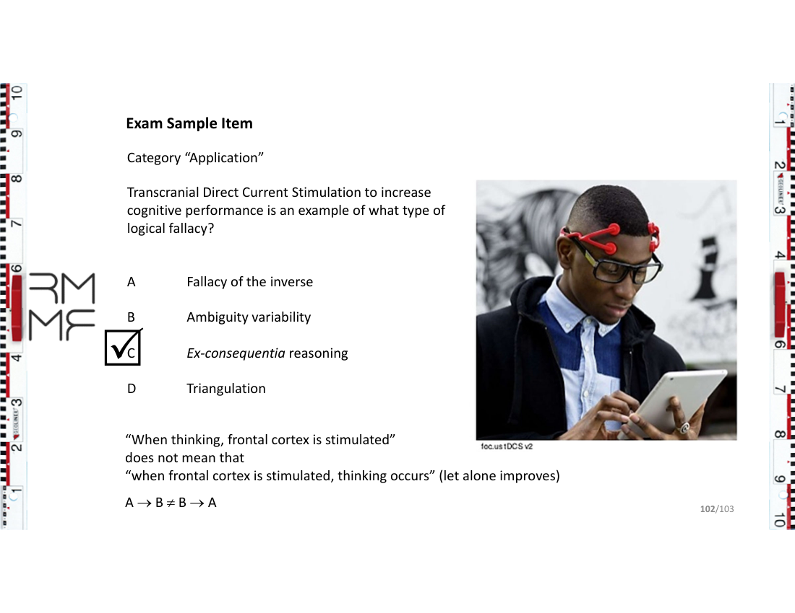

L05-E01 / Insight / 选择题
fat finger 与 Fitts：最佳答案要完整 
05 Σ SD5979 Behav&Physio 2026 10 02.pdf · PDF 第 31 页 · 点击放大 题干中文辅助（原译文） 考试样题
我的作答 A B C D 加入错题
查看老师答案与逐项解释 / 来源 老师答案 D 以原页勾选为准
以下为依据课件整理的逐项解释。未被选中不等于概念从未讲过；“无题设依据”也不等于全课未出现。
这些选项的概念，课件正文是否出现过？ 检索全部 903 页，排除已收录题目、答案页和可识别的样题 / 参考文献页。下列为按原词检索的出现记录，可能包含变体遗漏；出现不代表定义正确，也不代表考试重点。错项判定仍以逐项解释和老师答案为准。
老师原答案与题目延续 05 Σ SD5979 Behav&Physio 2026 10 02.pdf · PDF 第 32 页 · 点击放大 L05-E02 / Insight / 开放题
预警与对手：最难条件 
05 Σ SD5979 Behav&Physio 2026 10 02.pdf · PDF 第 41 页 · 点击放大 题干中文辅助（原译文） 考试样题：开放式问答题
我的作答 加入错题
查看老师答案与逐项解释 / 来源 A · 最困难条件 条件 2：没有预警，却出现需要射击的对手。
B · 表现如何？ 反应更慢，错误率更高，即效率更低。
以上短答是课件内容的中文整理；每一小问分别对应上面的证据页。原答案 / 延续页见下方。
老师原答案与题目延续 05 Σ SD5979 Behav&Physio 2026 10 02.pdf · PDF 第 42 页 · 点击放大 L05-E03 / Application / 开放题
测谎系统：中性基线可靠吗？ 
05 Σ SD5979 Behav&Physio 2026 10 02.pdf · PDF 第 65 页 · 点击放大 题干中文辅助（原译文） 65/103
我的作答 加入错题
查看老师答案与逐项解释 / 来源 A · 中性基线的问题 被检查是否说谎时，很难处于真正情绪中性的状态。
B · 其他变异来源 感冒、恋爱或失恋、恐惧、烦恼、愤怒等。
C · 可能没有这些变异的人 受过声音训练者：职业扑克玩家、特工、惯犯、舞台演员。
以上短答是课件内容的中文整理；每一小问分别对应上面的证据页。原答案 / 延续页见下方。
老师原答案与题目延续 05 Σ SD5979 Behav&Physio 2026 10 02.pdf · PDF 第 65 页 · 点击放大 L05-E04 / Application / 选择题
思考→激活，能否反推？ 05 Σ SD5979 Behav&Physio 2026 10 02.pdf · PDF 第 101 页 · 点击放大 题干中文辅助（原译文） 考试样题
我的作答 A B C D 加入错题
查看老师答案与逐项解释 / 来源 老师答案 C 以原页勾选为准
以下为依据课件整理的逐项解释。未被选中不等于概念从未讲过；“无题设依据”也不等于全课未出现。
这些选项的概念，课件正文是否出现过？ 检索全部 903 页，排除已收录题目、答案页和可识别的样题 / 参考文献页。下列为按原词检索的出现记录，可能包含变体遗漏；出现不代表定义正确，也不代表考试重点。错项判定仍以逐项解释和老师答案为准。
Fallacy of the inverse 未检出独立正文原词命中
这不证明概念从未以其他表达讲过；不把它直接当成该选项错误的理由。
Ambiguity variability 未检出独立正文原词命中
这不证明概念从未以其他表达讲过；不把它直接当成该选项错误的理由。
Ex-consequentia 正文原词命中 2 页
老师原答案与题目延续 
05 Σ SD5979 Behav&Physio 2026 10 02.pdf · PDF 第 102 页 · 点击放大